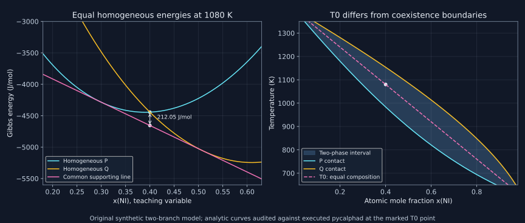

15. Composition paths, property references and T₀ curves
A multicomponent section is a constraint manifold, a mixing-energy plot depends on its reference, and a T₀ crossing compares two phases at the same composition. None is a substitute for the full equilibrium envelope. The useful calculations begin by keeping those three constructions separate and then checking how they transform under a change of coordinates.
1. A ratio path is a set of independent linear conditions
Lesson 31, 16:27–26:57; lesson 32, 01:28–20:16.
For a closed C-component substitutional system, overall atomic mole fractions obey \(x_i\ge0\), \(\sum_i x_i=1\). Thus C−1 independent coordinates specify one bulk composition. A chosen path can be expressed by additional linear equations \(A\boldsymbol{x}=\boldsymbol b(s)\). Counting written equations is not enough: their rank, compatibility and positivity determine whether a physical path has been specified.
The ternary equal-Fe:Cr path uses \(x_{\rm Cr}-x_{\rm Fe}=0\) and \(x_{\rm Ni}=s\). Together with normalization, these imply \(x_{\rm Fe}=x_{\rm Cr}=(1-s)/2\), with \(0\le s\le1\). The homogeneous equation places a numerical zero on the right, as required by the recorded console condition syntax. In a quaternary Co–Cr–Fe–Ni path, two independent equality constraints leave the first three elements at \((1-s)/3\) each when nickel has fraction s.
For a five-component Co:Cr:Fe:Ni background ratio 2:1:1:1 and variable vanadium fraction s, use
\[x_{\rm Co}-2x_{\rm Cr}=0,\quad x_{\rm Cr}-x_{\rm Fe}=0,\quad x_{\rm Fe}-x_{\rm Ni}=0,\quad x_{\rm V}=s.\]Normalization gives \((x_{\rm Co},x_{\rm Cr},x_{\rm Fe},x_{\rm Ni},x_{\rm V})=(2(1-s)/5,(1-s)/5,(1-s)/5,(1-s)/5,s)\). At s=0.2 this is (0.32,0.16,0.16,0.16,0.20), which the laboratory recovers from a rank-five matrix including normalization. Adding \(x_{\rm Co}-x_{\rm Fe}=0\) would contradict this nonzero background ratio, rather than improve specification.
At s=1 the background components vanish. Their literal ratios are 0/0 and no longer define a ratio experimentally; the linear equations still define the endpoint by continuous extension. This is one reason cross-multiplied linear constraints are more robust than dividing by a component fraction that can vanish. More generally, a background ratio \(r_1:\cdots:r_m\) with positive coefficients gives \(x_i=(1-s)r_i/\sum_jr_j\).
More generally, an affine constraint set of rank r within the normalized composition simplex has local dimension \(C-1-r\), provided it intersects the simplex in a regular interior region. An equal-ratio background path imposes C−2 independent restrictions, leaving one composition parameter. Adding temperature as a second variable then gives a two-dimensional section at fixed pressure. Fixing that parameter at one value for a single equilibrium adds the final independent composition condition. A ratio equation already implied by the others adds no rank, even if a console accepts its text.
These equations constrain the overall composition, not every coexisting phase. They therefore define an isopleth rather than guaranteeing a strict reduced binary equilibrium. They also do not make the alloy equiatomic unless all C component fractions coincide. A ratio among a subset and an equiatomic entire alloy are different specifications.
2. Calculation coordinates and display coordinates play different roles
Lesson 31, 00:54–16:27; lesson 32, 20:24–26:36.
The recorded console procedure first defines a valid point, then sets independent axis variables, performs STEP or MAP, and chooses plotting axes in POST. A one-axis property path and a two-axis phase map require different conditions to be released. The first seed point and its phase set can affect numerical continuation, but are not physical initial conditions for a time-dependent process.
The lecture informally describes MAP as calculating all combinations on a grid. The actually inspected official 2014 console reference, printed 155–157, instead describes mapped phase-boundary curves and notes that multiple starting equilibria can be needed for completeness. A Cartesian grid of independent equilibrium calculations is another valid implementation strategy, but it should not be asserted as the complete internal algorithm behind the recorded command.
Likewise,40 equal intervals between 0 and 1 have 41 endpoints when both are included. An input increment may govern a continuation step or sampling policy rather than guarantee a particular total count of computed equilibria. Record the actual output conditions and convergence messages. The recorded G-versus-composition example later works without an explicit initial COMPUTE command; that observation cautions against turning a convenient seed workflow into a universal prerequisite of every software calculation.
A phase-fraction kink may be a real phase appearance or disappearance, an invariant reaction, a branch change, an unresolved narrow field or a numerical failure. One should inspect individual equilibria, conservation residuals and numerical convergence rather than smooth away every kink to make a curve look attractive. Reducing a step and changing the seed can test numerical reliability. Neither changes the database’s physics or proves that every disconnected phase field has been found.
Finally, the presence of an element in a database does not establish equal accuracy throughout its composition simplex. Compatible phase models, assessed subsystems, intended alloy family and temperature/pressure ranges matter. A nickel-based database may evaluate a far-from-nickel-rich point without strong experimental support there. Executability is not an uncertainty estimate.
3. Common-tangent geometry requires a matching energy and composition basis
Lesson 33, 01:34–12:27, followed by an original coordinate audit.
The lecture connects separate-phase Gibbs curves to a binary phase map. In the standard molar construction, \(g\) is energy per mole of atoms and \(x=x_B\) is atomic mole fraction. Phase-amount conservation then makes a mixture’s composition and molar energy affine combinations with the same mole fractions, which is exactly why straight supporting lines characterize equilibrium.
Changing only the horizontal coordinate to mass fraction w is a nonlinear transformation when molar masses differ. With \(M_A,M_B\) positive,
\[w=\frac{xM_B}{(1-x)M_A+xM_B},\qquad x=\frac{w/M_B}{(1-w)/M_A+w/M_B}.\]A straight line in \((x,g)\) generally becomes curved in \((w,g)\). Therefore equal tangents drawn geometrically on a plot of molar Gibbs energy versus mass percentage do not in general recover the physical equilibrium contacts. The software may correctly calculate equilibria while the user’s attempted graphical interpretation of that property plot is wrong.
To recover the corresponding straight-line construction in mass coordinates, also transform the ordinate to Gibbs energy per mass,
\[\widehat g(w)=\frac{g(x(w))}{\overline M(x(w))},\quad \overline M=(1-x)M_A+xM_B.\]Now mixture energy per mass and w are affine combinations using phase mass fractions. A molar supporting line \(\ell(x)=\mu_A(1-x)+\mu_Bx\) transforms to
\[\widehat\ell(w)=\frac{\mu_A}{M_A}(1-w)+\frac{\mu_B}{M_B}w.\]The inequality is preserved because division by the positive molar mass preserves its sign. If \(g^\phi\ge\ell\) for every phase and composition, then \(\widehat g^\phi\ge\widehat\ell\), with equality at the same physical phase states. Thus the correct mass-specific diagram has a common supporting line, with contacts at the transformed w values. This is a change of representation, not a new phase equilibrium.
For an exact counterexample, take \(M_A=50\), \(M_B=100\) g/mol and two branches \(g^\alpha=10000(x-0.2)^2+2000x-1000\), \(g^\beta=10000(x-0.8)^2+2000x-1000\). Their molar support is \(2000x-1000\), touching at 0.2 and 0.8. These map to \(w=1/3\) and 8/9. Since \(x=w/(2-w)\), the molar-plot slopes at the contacts are 1440 and 3240 J/mol per unit w, so they are not equal. The correct specific support is \(-20+30w\) J/g, touching at energies−10 and 20/3 J/g. The laboratory verifies these values exactly to floating-point rounding.
4. A common elemental reference preserves phase competition
A reference change at fixed T,p subtracts the same elemental affine function from every phase:
\[g^{\phi,R}(T,x)=g^\phi(T,x)-(1-x)q_A(T,p)-xq_B(T,p).\]Conservation makes the subtracted total identical for every feasible assemblage. Hence phase equilibria and same-composition phase differences are unchanged, while \(\mu_i^R=\mu_i-q_i\). A reference to the two pure BCC endmembers at the current temperature makes the BCC mixing function vanish at its endpoints. A competing FCC or compound branch generally retains nonzero endpoint offsets, namely its lattice stabilities relative to those same BCC references.
By contrast, subtracting each phase’s own pure endpoints produces different affine functions for different phases. Those individual mixing quantities help isolate nonideality within a phase, but their relative values cannot generally rank competing phases. The official pycalphad mixing-reference example explicitly defines its special _MIX output relative to the endmembers of that phase. The code below executes that output on both synthetic branches to expose the difference.
In the recorded console exercise, a saved log is edited for replay: exploratory help commands and an exit are removed, SET_REFERENCE_STATE is supplied for both Cr and Fe using the same BCC phase at the current conditions, and the POST ordinate is changed from GM to GMR. The latter requests the property with the selected reference. These are distinct changes to the numerical definition and its renderer; changing a label alone is not a reference transformation. Preserve the explicit prompt values and software context when adapting a macro. This edition describes that recorded replay but does not claim to execute its commercial commands.
In the synthetic P/Q example below, each phase has only ideal mixing in addition to its own linear endmember energies. Subtracting each phase’s own endmembers therefore leaves the identical function RTq(x) for both phases at every temperature. Treating those two mixing outputs as competing absolute phase energies would falsely make every temperature a T₀ crossing. The raw phase-energy difference instead has one composition-dependent zero. This is not a small offset error: it removes the physical information that distinguishes the phase branches.
If the common reference depends on temperature, a relative-energy plot also has corresponding relative derivatives. Put \(q=(1-x)q_A+xq_B\). At fixed p,x,
\[s^R=s+q_T,\qquad h^R=h-q+Tq_T,\qquad c_p^R=c_p+Tq_{TT}.\]These follow by differentiating \(g^R=g-q\). Simply changing a Gibbs-energy zero does not mean every other reported relative quantity remains unchanged. With fixed numerical enthalpy offsets only, q has no temperature derivative and the entropy difference is zero. A reference at the current temperature can instead carry the endmembers’ temperature dependence. Its definition must accompany any derivative-based interpretation.
5. Not every property is a derivative of Gibbs energy
At fixed composition, entropy, enthalpy, heat capacity and volume follow from a sufficiently specified Gibbs function through \(s=-g_T\), \(h=g-Tg_T\), \(c_p=-Tg_{TT}\), \(v=g_p\). This requires the relevant T or p dependence to be in the model. A pressure-independent function cannot supply a reliable nonzero compressibility merely because the renderer offers a volume or pressure axis.
Diffusion mobilities, viscosity and thermal conductivity contain additional dynamical information. Two systems can share the same equilibrium free-energy landscape but have different rates of motion over it. A simple nonuniqueness construction is \(\dot\xi=-M\,G'(\xi)\) for an internal coordinate with positive mobility M: changing M rescales relaxation times while retaining the same stationary extrema and sign \(\dot G=-M[G']^2\le0\). Equilibrium G alone therefore does not identify M.
Campbell, Kattner and Liu’s2014 primary review, selected pages 1–3,8–10,12–13 read here, distinguishes thermodynamic factors from diffusion mobilities and discusses additional phase-property descriptions for conductivity and other quantities. Its data-infrastructure argument matters to the present workflow: record which property model and data supplement the thermodynamic database. Selecting a menu entry is not a derivation of a transport coefficient from G alone. The full 23-page paper and its cited transport assessments were not reproduced.
6. T₀ is an equal-composition crossing, not a common tangent
Define \(\Delta g(T,x)=g^Q(T,x)-g^P(T,x)\) at the same T,p and chemical composition. A T₀ point satisfies \(\Delta g(T_0,x)=0\), provided both constrained phase branches exist there. Equilibrium coexistence instead usually compares \(g^P(T,a)\) and \(g^Q(T,b)\) at different compositions with a common supporting line. Equality of the two homogeneous energies at x does not make their slopes equal or put that crossing on the equilibrium envelope.
For a differentiable isolated root with \(\Delta g_T\ne0\), implicit differentiation gives
\[\frac{dT_0}{dx}=-\frac{\Delta g_x}{\Delta g_T}=\frac{\Delta g_x}{\Delta s},\qquad \Delta s=s^Q-s^P.\]A vanishing entropy difference can make this formula singular or require a different local parameterization. There can be no root in a requested interval, multiple roots, or a touching root without stability-order reversal. A common elemental reference cancels from \(\Delta g\); independent phase-specific mixing references do not generally preserve T₀.
Our synthetic database uses \(D=4000\) J/mol and \(\delta(T)=10(1000-T)\) J/mol, with T numerically in kelvin and the coefficient 10 having units J/(mol K):
\[g^P=Dx+RTq(x),\quad g^Q=D(1-x)+\delta(T)+RTq(x),\quad q=(1-x)\ln(1-x)+x\ln x.\]Thus \(\Delta g=14000-10T-8000x\), giving \(T_0(x)=1400-800x\) K and slope−800 K per unit mole fraction. At x=0.4, T₀=1080 K. Actual homogeneous property calculations for both branches give the same−4443.4159 J/mol there.
They can nevertheless coexist at different compositions. The two chemical-potential equalities give
\[\frac{1-a}{1-b}=u=e^{(D+\delta)/(RT)},\qquad \frac a b=v=e^{(\delta-D)/(RT)},\] \[b=\frac{u-1}{u-v},\qquad a=vb.\]These formulas supply interior contacts when \(-D<\delta<D\); outside that regime they must not be blindly used as feasible two-phase compositions. Both branches are strictly convex, and their equal tangent slope and intercept provide a global supporting line for this two-branch problem. At 1080 K, the executed solver agrees with \(a=0.297860\), \(b=0.508348\), and Q amount 0.485253 at bulk x=0.4. Equilibrium energy is−4655.4648, lower than the homogeneous crossing by 212.0489 J/mol. This explicitly separates equal-composition degeneracy from phase coexistence.

7. Thermodynamic permission does not select a transformation mechanism
For a parent Q transforming to product P without changing composition, the chemical contribution is \(g^P-g^Q=-\Delta g\). At bulk x=0.4 it equals \(10(T-1080)\) J/mol: negative at 1000 K, zero at 1080 K and positive at 1160 K. For a closed isothermal-isobaric transformation driven only by this bulk term, the negative sign favors P. It does not prove that P nucleates, that an interface can advance at a specified speed, or that a given cooling schedule suppresses partitioning.
Additional stored elastic or defect energy in a product and positive interfacial energy can oppose formation. For example, a stipulated extra 500 J/mol in P changes this bulk comparison to \(10(T-1080)+500\), moving its zero to 1030 K. This is an energy-accounting example, not a martensite-start model. A finite nucleus also pays an area-dependent cost, whose effect cannot be represented by a universal constant for every size.
The recording uses partitionless solidification, massive transformation and martensitic transformation to motivate T₀. Preserving bulk composition does not uniquely identify these mechanisms. Partitionless solidification begins with a liquid; massive and martensitic transformations are solid-state classifications with different structural and kinetic features. A massive transformation need not mean that all atom-scale diffusion is absent, while a martensitic description involves a particular cooperative structural change. Rapid cooling alone does not establish any one mechanism. Equilibrium identity of a final phase also does not make the entire transformation path an equilibrium path.
8. Root localization needs a specified search and a residual check
The recorded property-model workflow selects two phases, defines a composition grid, calculates T₀ and overlays the phase map. The actual TC-Python 2026b T-zero definition exposes phase selection, a possible energy addition, a varied composition or temperature condition, manual search limits and root-localization steps. It explicitly includes a second-solution result. This supports treating root multiplicity and numerical search scope as part of the problem specification.
The lecture’s recommended 30 grid steps are a recorded example choice, not a universal accuracy theorem. With energy in J/mol and T numerically in kelvin, \(F(T)=(T-800)(T-1200)/1000\) is positive at 600 and 1400 K, negative at 1000 K, and has two roots inside. A single endpoint-sign test would miss both. The touching example \(F(T)=(T-1000)^2/1000\) has a root with no sign change. General root searches should state the domain, branch assumptions, localization/refinement procedure and the final \(|\Delta g|\) residual, rather than equating an absent bracket with proof of no physical crossing.
Overlaying a T₀ line on a phase map is a useful interpretive check only when both use the same components, references, phase definitions, composition basis and pressure. A line from one database version on a diagram from another is not an internally consistent comparison merely because the names FCC and BCC agree.
9. Reproduce the constraint, coordinate and T₀ audits
Run the exact downloadable program from the book root using the pinned environment and the public teaching TDB. It uses the executed engine’s rounded \(R=8.3145\) J/(mol K) for analytic comparisons, retains phase identities and compositions, and checks both balances and the analytic support-line value. The coarse displayed energies are not uncertainty bars.
"""Original path/reference/T-zero audits with executed pycalphad0.11.1."""
from pathlib import Path
from math import exp, log, isclose
import numpy as np
import pycalphad
from pycalphad import Database, calculate, equilibrium, variables as v
assert pycalphad.__version__ == "0.11.1"
R = float(v.R)
db = Database(str(Path("data/ch15_tzero.tdb")))
# Independent linear conditions in Co,Cr,Fe,Ni,V order.
A = np.array(
[
[1, 1, 1, 1, 1],
[0, 0, 0, 0, 1],
[1, -2, 0, 0, 0],
[0, 1, -1, 0, 0],
[0, 0, 1, -1, 0],
],
dtype=float,
)
x = np.linalg.solve(A, np.array([1, 0.2, 0, 0, 0]))
assert np.linalg.matrix_rank(A) == 5 and np.allclose(
x, [0.32, 0.16, 0.16, 0.16, 0.2]
)
print("Five-component path: rank 5, fractions (.32,.16,.16,.16,.20) at xV=.20")
# Tangent geometry requires matching the ordinate and composition measure.
MA, MB = 50.0, 100.0
slope = 2000.0
intercept = -1000.0
for xx in [0.2, 0.8]:
w = xx * MB / ((1 - xx) * MA + xx * MB)
dxdw = 2 / (2 - w) ** 2
gm = slope * xx + intercept
gmass = gm / ((1 - xx) * MA + xx * MB)
assert isclose(gmass, -20 + 30 * w, abs_tol=1e-12)
print(
(
f"Tangent contact x="
f"{xx:.1f}"
f": w="
f"{w:.9f}"
f", molar-plot slope="
f"{slope * dxdw:.6f}"
f", specific g="
f"{gmass:.9f}"
f" J/g"
)
)
print("Correct mass-specific supporting line: -20 + 30w J/g")
def energy(phase, T, xx, output="GM"):
res = calculate(
db,
["CU", "NI"],
[phase],
T=T,
P=100000,
N=1,
points=np.array([[1 - xx, xx]]),
output=output,
)
return float(res[output].values.squeeze())
z = 0.4
T0 = 1400 - 800 * z
p = energy("PSOL", T0, z)
q = energy("QSOL", T0, z)
assert abs(p - q) < 1e-6
print(f"T0 at xNi=.4: {T0:.6f} K; equal homogeneous GM={p:.4f} J/mol")
D = 4000.0
delta = 10 * (1000 - T0)
u = exp((D + delta) / (R * T0))
vv = exp((delta - D) / (R * T0))
b = (u - 1) / (u - vv)
a = vv * b
muA = R * T0 * log(1 - a)
m = D + R * T0 * log(a / (1 - a))
f = (z - a) / (b - a)
res = equilibrium(
db,
["CU", "NI"],
["PSOL", "QSOL"],
{v.T: T0, v.P: 100000, v.N: 1, v.X("NI"): z},
calc_opts={"pdens": 1000},
)
records = sorted(
(str(n), float(xx), float(ff))
for n, xx, ff in zip(
res.Phase.values.reshape(-1),
res.X.sel(component="NI").values.reshape(-1),
res.NP.values.reshape(-1),
)
if n and np.isfinite(ff) and ff > 1e-9
)
assert [r[0] for r in records] == ["PSOL", "QSOL"]
assert abs(records[0][1] - a) < 1e-7 and abs(records[1][1] - b) < 1e-7
assert abs(records[1][2] - f) < 1e-7
assert abs(sum(xx * ff for _, xx, ff in records) - z) < 1e-9
assert abs(float(res.GM.values.squeeze()) - (muA + m * z)) < 1e-6
print(
(
f"Coexistence at T0: xP="
f"{a:.6f}"
f", xQ="
f"{b:.6f}"
f", fQ="
f"{f:.6f}"
f", GM="
f"{float(res.GM.values.squeeze()):.4f}"
)
)
print(
(
f"Homogeneous equality lies "
f"{p - float(res.GM.values.squeeze()):.4f}"
f" J/mol above global equilibrium"
)
)
# Positive curvature makes these common tangents global for the two branches.
assert a < z < b and p > float(res.GM.values.squeeze())
T = 1000.0
raw = energy("QSOL", T, z) - energy("PSOL", T, z)
wrong = energy("QSOL", T, z, "GM_MIX") - energy("PSOL", T, z, "GM_MIX")
assert abs(raw - 800) < 1e-6 and abs(wrong) < 1e-6
wrong = 0.0 if abs(wrong) < 1e-6 else wrong
print(
(
f"Common reference raw gQ-gP="
f"{raw:.4f}"
f"; independent phase mixing references difference="
f"{wrong:.4f}"
)
)
# A common P-endmember subtraction preserves the phase difference.
assert isclose(
(energy("QSOL", T, z) - 4000 * z) - (energy("PSOL", T, z) - 4000 * z),
raw,
abs_tol=1e-8,
)
print(
"Common elemental reference subtraction preserves phase competition: PASS"
)
# Parent Q to product P at the same z; below T0, the bulk chemical change
# favors P.
for T in [1000.0, 1080.0, 1160.0]:
dg = energy("PSOL", T, z) - energy("QSOL", T, z)
assert abs(dg - 10 * (T - T0)) < 1e-6
dg = 0.0 if abs(dg) < 1e-6 else dg
print(f"Partitionless Q to P, T={T:.0f}: delta g={dg:.4f} J/mol")
# Root localization needs more than one sign test over a wide interval.
def rootfn(T):
return (T - 800) * (T - 1200) / 1000
assert rootfn(600) > 0 and rootfn(1400) > 0
assert rootfn(1000) < 0 and rootfn(800) == rootfn(1200) == 0
print(
(
"Two-root counterexample: endpoints600/1400 positive; roots800 and120"
"0; interior1000 negative"
)
)
def touch(T):
return (T - 1000) ** 2 / 1000
assert touch(900) > 0 and touch(1100) > 0 and touch(1000) == 0
print(
"Tangential root: 1000 K, no sign change and no stability-order reversal"
)
Five-component path: rank 5, fractions (.32,.16,.16,.16,.20) at xV=.20 Tangent contact x=0.2: w=0.333333333, molar-plot slope=1440.000000, specific g=-10.000000000 J/g Tangent contact x=0.8: w=0.888888889, molar-plot slope=3240.000000, specific g=6.666666667 J/g Correct mass-specific supporting line: -20 + 30w J/g T0 at xNi=.4: 1080.000000 K; equal homogeneous GM=-4443.4159 J/mol Coexistence at T0: xP=0.297860, xQ=0.508348, fQ=0.485253, GM=-4655.4648 Homogeneous equality lies 212.0489 J/mol above global equilibrium Common reference raw gQ-gP=800.0000; independent phase mixing references difference=0.0000 Common elemental reference subtraction preserves phase competition: PASS Partitionless Q to P, T=1000: delta g=-800.0000 J/mol Partitionless Q to P, T=1080: delta g=0.0000 J/mol Partitionless Q to P, T=1160: delta g=800.0000 J/mol Two-root counterexample: endpoints600/1400 positive; roots800 and1200; interior1000 negative Tangential root: 1000 K, no sign change and no stability-order reversal
10. Exercises with complete solutions
1. Construct a constrained five-component section
Parameterize a Co:Cr:Fe:Ni ratio 2:1:1:1 background with variable V fraction s. What happens to the literal ratios at s=1?
Solution
The four background coefficients sum to 5. Their fractions are 2(1−s)/5,(1−s)/5,(1−s)/5,(1−s)/5, with V=s. At s=.2 they are(.32,.16,.16,.16,.20), summing to 1. The three independent cross-multiplied ratio equations, the V condition and normalization form a full-rank five-by-five system. At s=1, each background fraction is 0 and its ratios are undefined; the endpoint is the continuous limit satisfying the linear equations. It is not a state in which finite background atoms have an experimentally measurable 2:1 ratio.
2. Why can a plotted molar tangent fail after an axis change?
For the molar support 2000x−1000 and masses 50,100g/mol, derive the transformed contact slopes and the correct specific support.
Solution
The relation is x=w/(2−w), with derivative 2/(2−w)². At x=.2,w=1/3, this derivative is .72; at x=.8,w=8/9, it is 1.62. Therefore the slopes of molar energy against w are 1440 and 3240, not a common tangent. Meanwhile 1/Mbar=(2−w)/100, so dividing the support by Mbar gives[2000w−1000(2−w)]/100=−20+30w J/g. Its slope 30 is shared at both physical contacts. The positive division also preserves the global supporting inequality.
3. Transform caloric quantities with a temperature-dependent reference
Let a common elemental reference subtraction give gR=g−q(T,x). Derive sR,hR and cpR, and specialize to q=A+BT.
Solution
At fixed composition and pressure, sR=−∂T(g−q)=s+qT. Then hR=gR+TsR=h−q+TqT, and cpR=−T∂TT(g−q)=cp+TqTT. For q=A+BT this becomes sR=s+B,hR=h−A,cpR=cp. Even though an affine common reference preserves equilibrium, reported relative entropy and enthalpy can change. These derivative relations do not identify a physical transport coefficient.
4. Can separately referenced mixing energies rank phases?
At 1000 K and x=.4, compare the raw P/Q energy difference with the difference of their own endmember-referenced mixing energies.
Solution
Here δ=0, so gQ−gP=D(1−2x)=4000(.2)=800 J/mol. P has the lower homogeneous energy. Removing each phase’s own linear endmember function leaves exactly RTq(x) in both, so their mixing-energy difference is 0. That equality has erased their relative lattice stability. Subtracting the same P-endmember reference 4000x from both instead leaves the raw difference 800 unchanged. A common comparison reference and separate within-phase mixing decompositions answer different questions.
5. Derive the T₀ curve and its slope
Find T₀(x) for the synthetic database and check the implicit derivative formula.
Solution
Subtracting gives Δg=14000−10T−8000x. SolvingΔg=0 gives T₀=1400−800x K, so x=.4 gives 1080 K and the slope is−800 K. Also ΔgT=−10 J/(mol K), Δgx=−8000 J/mol, and Δs=−ΔgT=10 J/(mol K). Thus−Δgx/ΔgT=Δgx/Δs=−800 K. Both ideal mixing terms cancel because these particular phases use the same ideal configurational contribution. That cancellation is a feature of this teaching model, not a property of every pair of phases.
6. Exhibit equilibrium below a homogeneous T₀ crossing
Derive the P/Q contact formulas and show why their mixture can lie below the equal-composition crossing at 1080 K.
Solution
For P, μA=RTln(1−a), μB=D+RTln a. For Q, μA=D+δ+RTln(1−b), μB=δ+RTln b. Equality gives(1−a)=u(1−b) and a=vb. Eliminating a yields b=(u−1)/(u−v). At 1080 K, δ=−800 J/mol; these give a≈.297860,b≈.508348. The Q fraction at bulk .4 is(.4−a)/(b−a)≈.485253. Convexity of each branch proves its tangent globally underlies it; equal chemical potentials make the two tangent lines identical. Their mixture energy−4655.4648 J/mol is below−4443.4159 by 212.0489. Equal homogeneous energies do not saturate that lower bound.
7. Add an opposing product energy
The composition-preserving Q→P bulk chemical change is 10(T−1080)J/mol. Add 500 J/mol of stored product energy. What threshold follows, and what does it fail to predict?
Solution
The stipulated total bulk change becomes 10(T−1080)+500. Setting it to 0 gives T=1030 K; below that it is negative. This is a conditional bulk energy comparison. It does not determine an activation barrier, interface mobility, nucleation rate, cooling-rate threshold or observed martensite-start temperature. Interfacial energy would also depend on nucleus size and geometry, so it cannot generally be folded into the same fixed 500 J/mol across all microstructures.
8. Diagnose a root-search failure
Explain why a wide endpoint-sign test fails for the two displayed root polynomials. Does a root always imply a change of phase preference?
Solution
For F=(T−800)(T−1200)/1000, both 600 K and 1400 K give 120 J/mol, while 1000 K gives−40 J/mol. There are roots 800 K and 1200 K despite equal positive endpoint signs. The function(T−1000)²/1000 is positive on both sides and 0 at 1000 K, so even arbitrarily close endpoint signs need not bracket its touching root. That root does not reverse the sign and hence does not by itself switch the energy ranking. A declared search resolution and residual check must be accompanied by attention to multiplicity and branch assumptions.
9. Why can a free-energy landscape not determine its relaxation time?
Compare two positive mobilities in the gradient dynamics example and identify what information a property database must add.
Solution
Both dynamics satisfy dG/dt=−M(G′)²≤0 and have the same stationary points G′=0. If M is multiplied by 100, a constant-mobility trajectory traverses the same state-space path 100 times faster, with the time coordinate rescaled. The equilibrium free energy and its minima are unchanged. A mobility, diffusivity or transport model therefore needs additional kinetic evidence and definitions. A menu providing viscosity or conductivity can use such added descriptions; its existence does not make them unique derivatives of the thermodynamic G function.
Previous: reproducible equilibrium calculations · All chapters